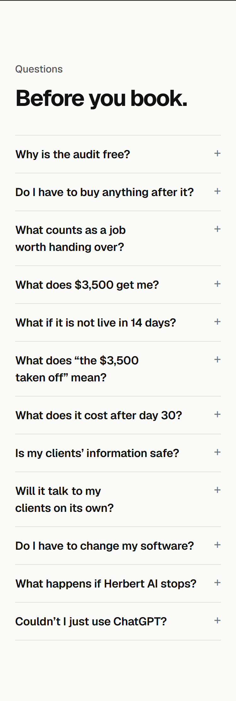
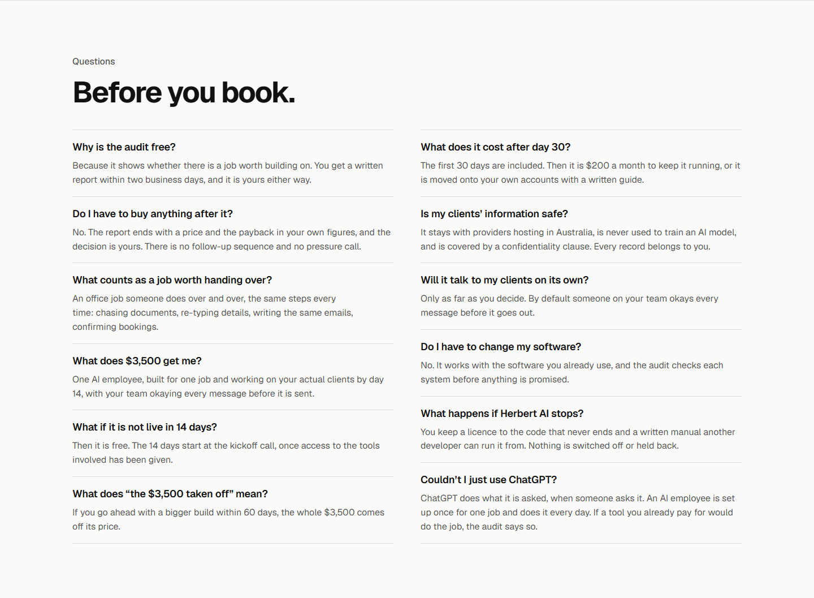
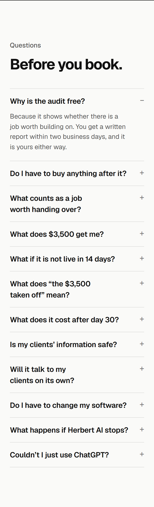
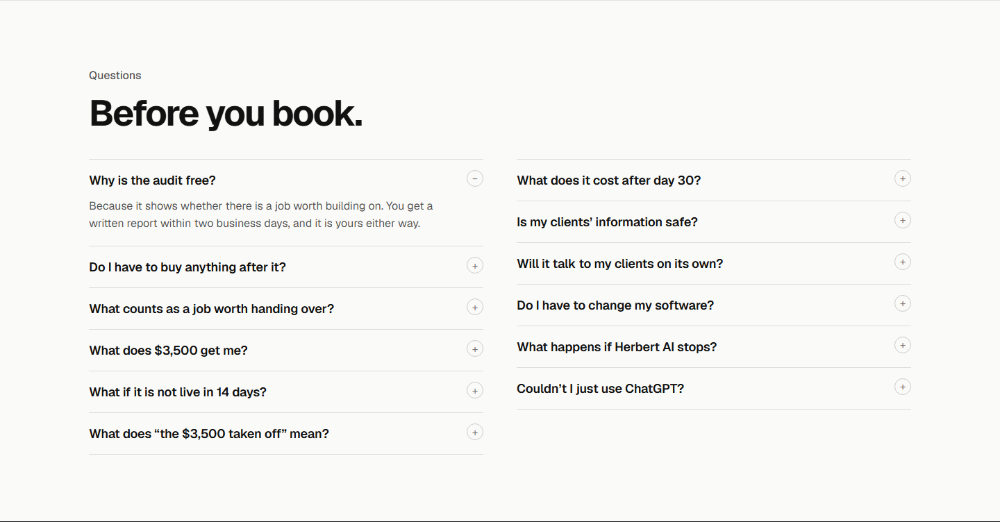
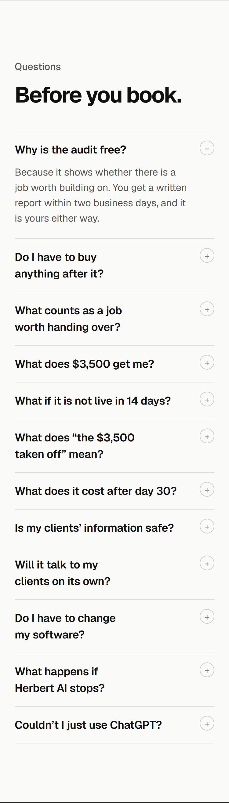
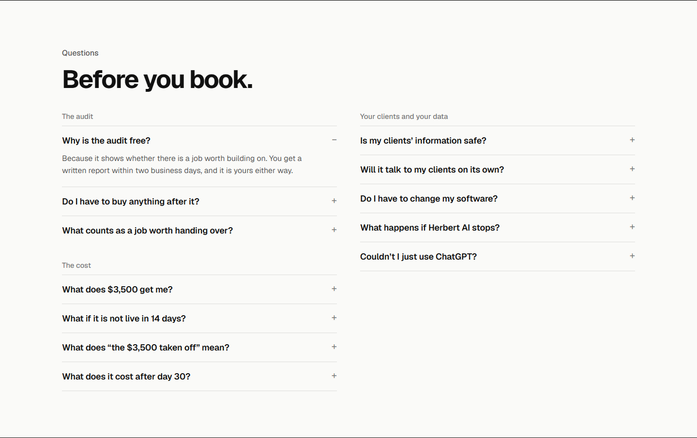
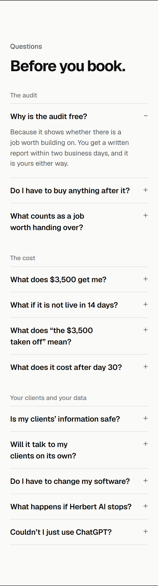
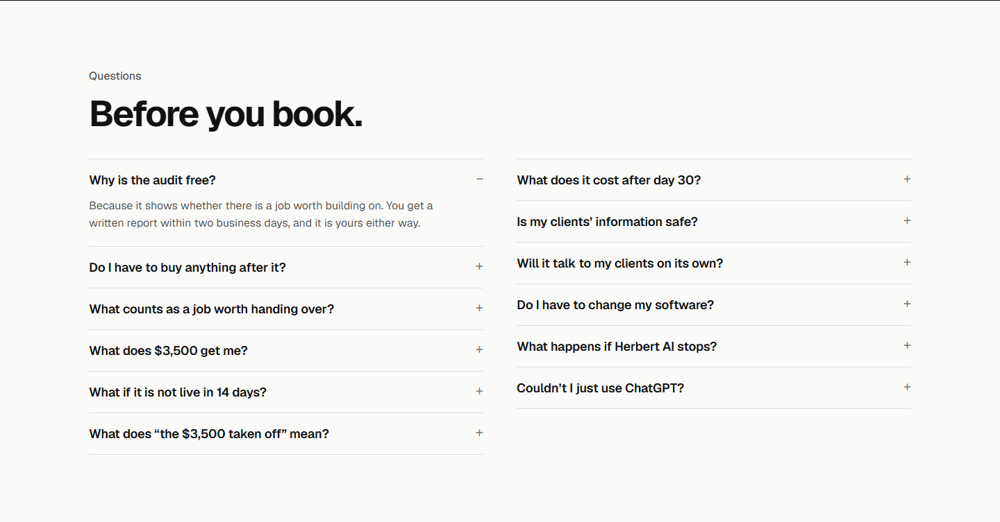
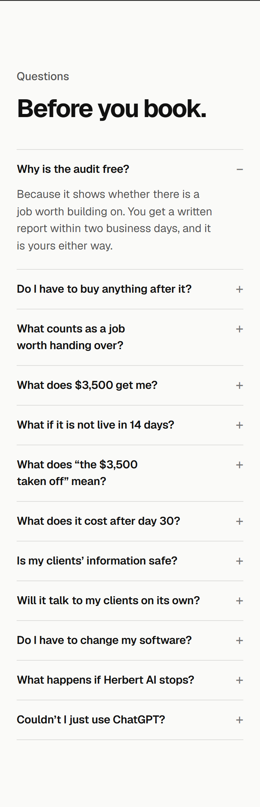

/pilot section 6, Questions: the details, three ways each (21 Nov 2026)
Built as A, folded (Will, 21 Nov 2026). Five details, numbered: 1 the heading, 2 what is open on load, 3 the sign on each row, 4 the order and runs, 5 phones. The first way of each is what is built now. Answer with five numbers, one per detail.
The page's labels and headings, top to bottom
| 1 | AI Audit | Find the job eating your time and money. |
| 2 | What you get back | What your admin costs, written down. |
| 3 | The timeline | Your first AI employee in four steps. |
| 4 | What it fixes | The jobs everyone hates doing. |
| 5 | What comes next | One job first. Then the system. |
| 6 | Questions | Before you book. |
| 7 | | Ready? Book your free AI audit ↑ |
Line test for detail 1: 32 headings
Out of 5, a point each, half for partly: Picture, Prove, Only us, Device, Will's shape. Highlighted: the three drawn below.
| # | Heading | Pic | Prove | Only | Dev | Shape | /5 | Drawn | Note |
|---|
| 1 | Before you book. | 0.5 | 0 | 0 | 0.5 | 1 | 2.0 | 1 (recommended) | today; hands straight to section 7's "Ready?" |
| 2 | What owners ask first. | 0.5 | 0.5 | 0 | 0 | 1 | 2.0 | | |
| 3 | What owners ask before they book. | 0.5 | 0.5 | 0 | 0 | 0.5 | 1.5 | | long |
| 4 | Still deciding? | 0.5 | 0 | 0 | 0.5 | 1 | 2.0 | | |
| 5 | Asked on every call. | 0.5 | 0.5 | 0 | 0.5 | 0.5 | 2.0 | | gate: not true, some came from replies |
| 6 | The questions every owner asks. | 0 | 0 | 0 | 0 | 0.5 | 0.5 | | |
| 7 | Before you give it 45 minutes. | 1 | 0.5 | 0.5 | 0.5 | 0.5 | 3.0 | 3 | the audit's own number |
| 8 | What you'd ask on the call. | 0.5 | 0 | 0.5 | 0.5 | 1 | 2.5 | | |
| 9 | Questions, answered plainly. | 0 | 0 | 0 | 0 | 0 | 0 | | describes its own tone |
| 10 | The fine print, in plain English. | 0.5 | 0.5 | 0 | 1 | 0 | 2.0 | | slogan |
| 11 | No fine print. | 0.5 | 0.5 | 0 | 1 | 0.5 | 2.5 | | gate: the agreement has clauses |
| 12 | Everything you'd ask first. | 0 | 0 | 0 | 0 | 0.5 | 0.5 | | gate: twelve, not everything |
| 13 | What stops people booking. | 0.5 | 0.5 | 0 | 0.5 | 0.5 | 2.0 | | talks about the reader, not to them |
| 14 | The catch? There isn't one. | 0.5 | 0 | 0 | 1 | 0 | 1.5 | | slogan couplet; gate: a promise |
| 15 | Asked and answered. | 0 | 0 | 0 | 1 | 0.5 | 1.5 | | |
| 16 | What’s the catch? | 0.5 | 0 | 0 | 1 | 1 | 2.5 | 2 | the owner's own question, a familiar phrase |
| 17 | Fair questions. | 0 | 0 | 0 | 0.5 | 0.5 | 1.0 | | |
| 18 | Your questions, before the call. | 0.5 | 0 | 0 | 0 | 0.5 | 1.0 | | |
| 19 | Before the 45 minutes. | 1 | 0.5 | 0.5 | 0 | 0.5 | 2.5 | | |
| 20 | Ask anything. | 0 | 0 | 0 | 0 | 0 | 0 | | gate: a fixed list |
| 21 | What owners want to know. | 0 | 0 | 0 | 0 | 0.5 | 0.5 | | |
| 22 | The questions that come up. | 0 | 0 | 0 | 0 | 0.5 | 0.5 | | |
| 23 | Twelve questions owners ask. | 0.5 | 0.5 | 0 | 1 | 0.5 | 2.5 | | a number |
| 24 | What every office asks first. | 0.5 | 0 | 0 | 0 | 0.5 | 1.0 | | |
| 25 | Before you hand anything over. | 1 | 0 | 0.5 | 0.5 | 1 | 3.0 | | echoes section 4; the audit hands nothing over |
| 26 | Before you hand over a job. | 1 | 0 | 0.5 | 0.5 | 0.5 | 2.5 | | |
| 27 | Questions from real calls. | 0.5 | 1 | 0.5 | 0 | 0.5 | 2.5 | | partly true: calls and replies |
| 28 | What people ask on the call. | 0.5 | 0.5 | 0.5 | 0 | 0.5 | 2.0 | | |
| 29 | The doubts, answered. | 0 | 0 | 0 | 0.5 | 0 | 0.5 | | |
| 30 | Still got a question? | 0.5 | 0 | 0 | 0.5 | 1 | 2.0 | | after twelve, reads as a close |
| 31 | Read this before you book. | 0 | 0 | 0 | 0 | 0.5 | 0.5 | | |
| 32 | (no heading, the label alone) | 0 | 0 | 0 | 0 | 0.5 | 0.5 | | judged on the page: twelve questions under a bare label |
Detail 1 of 5, the heading
Recommended 1, Before you book.: it scores 2, below the other two, but it hands straight to section 7's "Ready? Book your free AI audit" and every question under it is one asked before booking. 2 is the owner's own question and scores 2.5. 3 is the top score, 3, and carries the audit's own number, but it takes two lines at laptop and phone width where the others take one.
1.1 (as built) · 751px at 1440, 1226px at 375
1.2 · 751px at 1440, 1226px at 375
1.3 · 803px at 1440, 1262px at 375
Detail 2 of 5, what's open on load
Recommended 2, all closed: the plus on every row already says it opens, and the two runs end level, where the first open leaves the left run two rows longer. 3 opens every answer on laptops, which is B from the options on a laptop, and folds them on phones.
2.1 (as built) · 751px at 1440, 1226px at 375
2.2 · 686px at 1440, 1111px at 375


2.3 · 1056px at 1440, 1111px at 375


Detail 3 of 5, the sign on each row
Recommended 1, plus and minus, as built: the plainest mark that a row opens and closes. 2, a chevron, reads as a menu. 3, the ring, makes each row's sign a button and adds twelve circles to the section.
3.1 (as built) · 751px at 1440, 1226px at 375


3.2 · 751px at 1440, 1253px at 375
3.3 · 751px at 1440, 1307px at 375


Detail 4 of 5, the order and runs
Recommended 1, two runs of six, as built: the order already runs audit, cost, then clients and data, and the runs end level. 2 names the three runs, which helps a reader find the data questions but leaves seven rows on the left and five on the right. 3, one column, is twice as tall at laptop width.
4.1 (as built) · 751px at 1440, 1226px at 375
4.2 · 904px at 1440, 1382px at 375


4.3 · 1111px at 1440, 1226px at 375
Detail 5 of 5, phones
Recommended 1, twelve rows, as built: already half today's height on a phone, and every question can be seen without a second tap. 2 shows three and folds nine behind "Nine more questions", a fold inside a fold. 3 drops the questions to 16px, so more sit on one line, a size below the page's other questions. Laptops are the same in all three.
5.1 (as built) · 751px at 1440, 1226px at 375
5.2 · 751px at 1440, 689px at 375
5.3 · 751px at 1440, 1157px at 375

